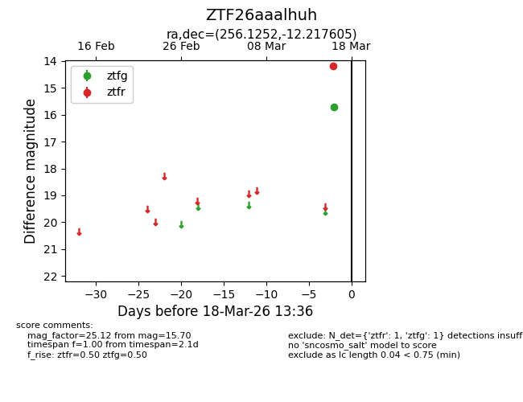
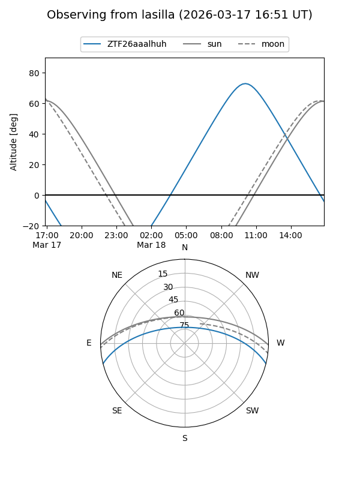
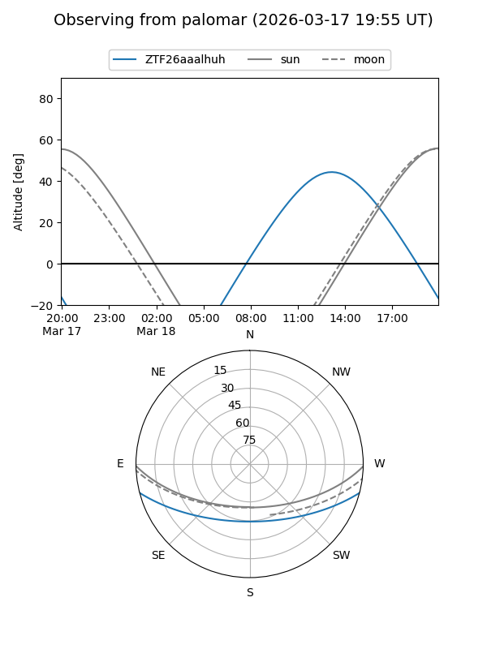
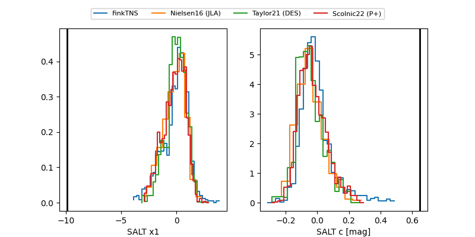

ZTF26aaalhuh
Target ZTF26aaalhuh at 2026-03-18 13:38
Aliases and brokers:
FINK: link
Lasair: link
ALeRCE: link
alt names
ZTF26aaalhuh (ztf,fink_ztf)
Coordinates:
equatorial (ra, dec) = 256.1252,-12.21760
equatorial (HMS+DMS) = 17:04:30.04,-12:13:03.38
galactic (l, b) = (8.9212,+17.14549)
Flags:
Photometry:
last ztfg=15.70, ztfr=14.18
1 ztfg, 1 ztfr detections
Lightcurve

Visibility


Additional plots
